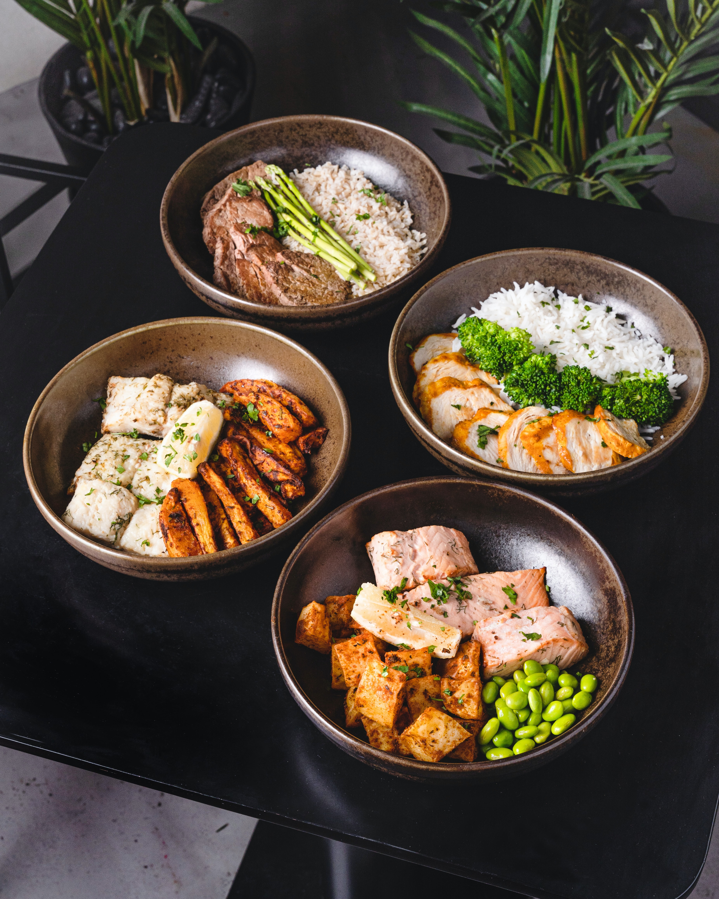

Sushi Recipe

Description
This vegetarian bowl version of the beloved Vietnamese banh mi sandwich gets its protein from quinoa and has a kick from a spicy vegetarian mayo sauce.
Delicious.
Ingredients
- 3 quarts water
- ½ (14 ounce) package boil-in-bag brown rice
- 1 quart water
- ¼ (12 ounce) package boil-in-bag quinoa
- 1 cucumber, thinly sliced
- 2 carrots, thinly sliced, or more to taste
- 6 radishes, thinly sliced, or more to taste
- ½ cup rice vinegar
- ¼ cup water
- ¼ cup white sugar
- 1 tablespoon sesame oil
- 1 teaspoon salt
- ½ cup egg-free mayonnaise
- 2 tablespoons sriracha sauce
- ½ cup chopped peanuts
- ½ cup chopped cilantro
Steps
- Pour 3 quarts water into a saucepan and add boil-in-bag rice packets. Bring to a boil. Cook, uncovered, 8 to 10 minutes. Remove bag using a fork and drain. Pour cooked rice into a bowl.
- Pour 1 quart water into a saucepan and add boil-in-bag quinoa packet. Bring to a boil. Cook, uncovered, about 10 minutes. Remove bag using a fork and drain. Pour cooked quinoa into a bowl.
- Place cucumber, carrots, and radishes into a bowl. Combine vinegar, 1/4 cup water, sugar, sesame oil, and salt in a small saucepan and bring to a boil. Pour mixture over the vegetables in the bowl. Let stand 20 minutes, then drain.
- While vegetables are pickling, combine mayonnaise and sriracha sauce in a small bowl. Stir until well combined and refrigerate until ready to serve.
- Add 1 cup cooked rice and 1/2 cup cooked quinoa to each of 4 bowls. Divide sriracha mayonnaise evenly between the bowls, drizzling over the rice and quinoa. Layer pickled vegetables on top and add 2 tablespoons each of the chopped peanuts and cilantro.